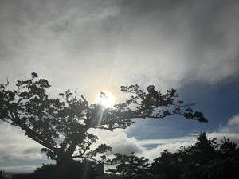
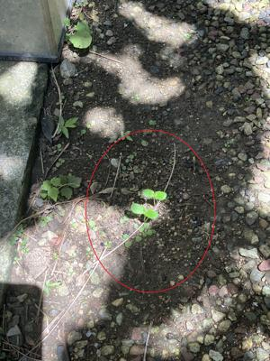

うるがいの話 ある日
最新: 鼻歌検索【うるがいの話 ある日】とは 一日だけのプログです
『うるがいの話』の最新一日だけのプログで、通信料が少なく経済的だ。カニの画像をクリックすると全ての日付が載る『うるがいの話』サイトを表示します
|
|
【うるがいの話】 うるがい(ｳﾙｶﾞｲ urugai)とは、『もずくがに』の名前でとても大きくなります。 |
|---|---|
|
|
【カミマヤーの話】 猫のことを方言でマヤーといいます。カミマヤー（kamimayaa）とは、神の猫のことです。 |
|
【たながぁの音楽】 たながぁ（ﾀﾅｶﾞｰ tanagaa）とは手長えびのことで、何種類かあり大きいのは車 エビぐらいになります。 |

|
【ぶながぁの話】 ぶながぁ(ﾌﾞﾅｶﾞｰ bunagaa)とは、赤い髪の毛、赤い身体、そして身長は１ｍ２０ｃｍ ぐらい、川の蟹を食べているの目撃された。場所は沖縄県国頭郡大宜味村のと ある村僕の隣近所に住んでいる爺さんから、聞いた話です。 |
|
|
【ギーマの話】 ギーマ(giima)とは、山原の里山に咲くスズランに似た、 花を付けます。実は食べられます、 気が付くと口の周りが紫になっています。 |
2025年06月07日 (土）鼻歌検索
15:20

とある曲が、頭に降りてきた。フムフム、この曲をユーチューブに
セヨということか。ただし、曲名が分からん！。そう言えば、ブラ
ザーのお気に入りに登録していたかもと、探す。アンドレ・リュウ
という人の動画だけど、無い。登録されている動画を探した。
Time_To_Say_Goodbye
Don't cry for me Argentina
「アルゼンチンよ、泣かないで」かも。ジョギングしているとまと
もやあの曲が、頭から流れてくる。あれ？、違う、そして夜中にな
っても気になり、ついにはパソコンで鼻歌検索を実施することに。
その前に、ヨメに部屋で何か声がしたらパソコンで鼻歌検索をして
いるからと、因みにこの曲だけどと、メロディーを鼻歌でする。聞
いたことあるよね・・・、しばらくすると『キャッツのメモリ』だ
よと言う。パソコンで確認した、当たっていた。
メモリー（Memory） 『キャッツ（CATS）』
曲名は分かったのだが、鼻歌検索してみるかとパソコンでChatGPT
でも挑戦したが、ダメでした。スマホのアプリで出来るのは知って
いるが、インストールするまでは。
朝、雨戸を開けるため軒下の道を歩くと、バタフライピーの芽が二
つあった。大雨があると、数センチほど水が溜まる場所なのに。
